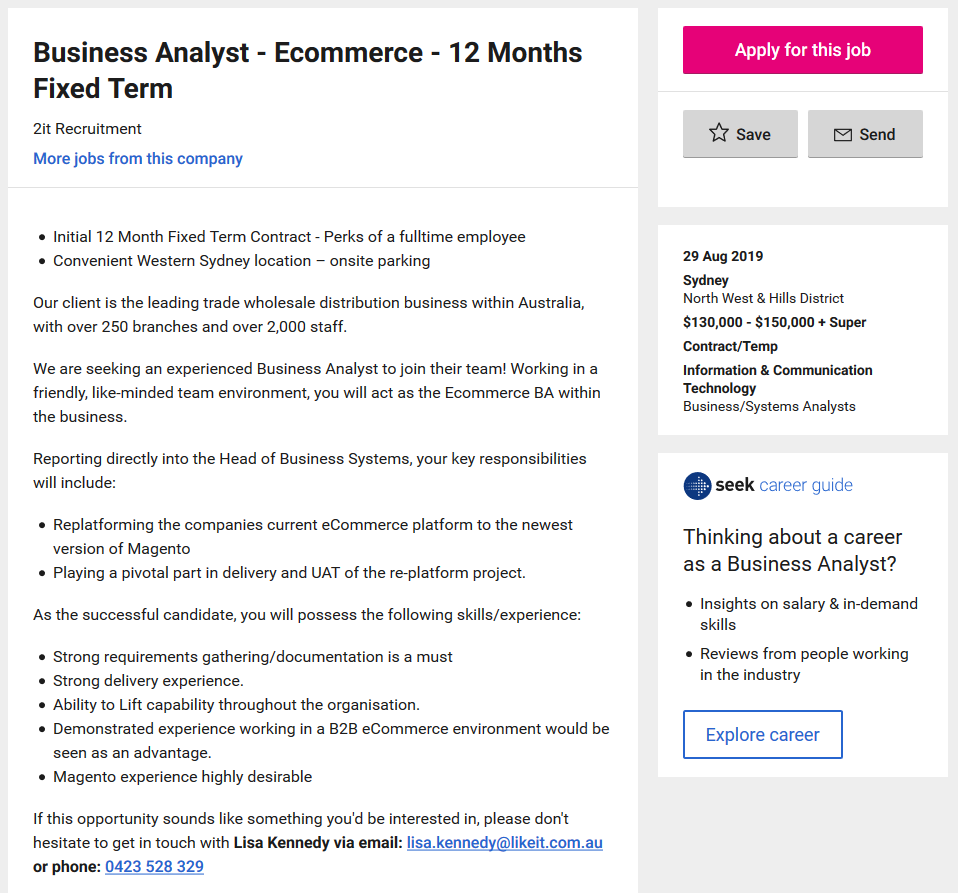

Name: Jordan Draganoff
Student Number:
S3818714
Email Address: S3818714@student.rmit.edu.au

Hi, my name is Jordan. I was born in the late 1990’s and grew up in the large country town of Bundaberg, in Queensland. I enjoy an active lifestyle and love to travel, hike and go jet-skiing. I graduated high school in 2013 and have been working in my parent’s business in the areas of sales, marketing and web development to name a few. In 2018, I decided to pursue my dream and started on my journey to become an IT professional.
Throughout my childhood and adult years I have always been interested in computers and any new electronic device, and have often been an early adopter of new technologies. Throughout these years I never really realised that I should, or could, make a career out of IT. Before changing to IT, I initially started to study a business/marketing degree which I soon realised was not an ideal fit for me as I found the marketing work to not be challenging enough for me. I soon came to a realisation that an IT degree with a minor in a business subject for exactly the right fit for me.
I chose RMIT for a couple of reasons; the first being that RMIT courses are available through Open Universities Australia which means I can enrol in courses straight away without any prerequisite. I also chose RMIT because they are a well established and respected university in Australia.
During my studies I expect get a foundation of knowledge on a wide range of skills needed for the IT industry. This foundation knowledge could then be applied to any aspect or niche that I wish to pursue as a career.
Business Analyst - Ecommerce
Source: SEEK. (2019). [online] Available at: https://www.seek.com.au/ [Accessed 03 Sep. 2019].
This job is calling for a business analyst to help a commercial wholesaler replatform their current ecommerce system to the newest version of Magento. This position appeals to me as I currently have experience in website development and am somewhat familiar with Magento. This job pays up to $150,000 for it’s 12 month contract. This type of work appeals to me as I love to travel; this kind of high paying short contract work will allow me to travel more.
This job is calling for a person with great business and management skills/experience. It also favours someone with experience in B2B ecommerce and Majento. For me to pursue a job such as this one, I would first have to gain more experience in a business analyst position. It would also be greatly beneficial for me to learn and get more comfortable with the Magento ecommerce platform.
I will first need to gain some experience working as a business analyst. The job position of Junior Business Analyst would be a great to gain experience as often the junior position doesn’t require nearly as much experience. Once I have gained enough work experience in lower position, I would have a much higher chance of securing a contract for a high paying business analyst position. It would also be greatly beneficial for me to become more familiar with common software used in the B2B selling environment.
Myers-Briggs Style Test
Extroversion>Introversion by 12%
Sensing>Intuition by 3%
Thinking>Feeling by 47%
Perceiving>Judging by 3%
Source: Humanmetrics.com. (2019). Personality test based on C. Jung and I. Briggs Myers type theory. [online] Available at: http://www.humanmetrics.com/cgi-win/jtypes2.asp [Accessed 10 Sep. 2019].
Learning Styles Test
Auditory:
20%
Visual: 40%
Tactile: 40%
Source: Humanmetrics.com. (2019). Personality test based on C. Jung and I. Briggs Myers type theory. [online] Available at: http://www.humanmetrics.com/cgi-win/jtypes2.asp [Accessed 10 Sep. 2019].
Big 5 Personality Test

Source: Openpsychometrics.org. (2019). Big Five Personality Test. [online] Available at: https://openpsychometrics.org/tests/IPIP-BFFM/ [Accessed 10 Sep. 2019].
The results of the online tests outline that I’m a visual/tactile learner, have high emotional stability and have a preference for thinking rather than feeling. These results point out that while I do have good emotional stability, I may struggle with understanding others emotions. The results such as my preference for extroversion and agreeableness indicate that other team members would be happy with my behaviour as part of a team. When forming a team, it would be beneficial to find other members with a similar learning style of visual/tactile as this would likely affect communications preferences and sharing of useful resources throughout the group.
Overview
The proposed project will be a device that a cat owner can use to remotely interact with their cat when they’re not at home.
Motivation
It is apparent that the people of Australia are becoming more tech savvy. The introduction of a new tech device for cats, if marketed well, will serve the new generation of cat-loving tech savvy people. The device will be created with relatively inexpensive technology and components including the Raspberry Pi mini computer. A low price point will allow this product to be marketed to a large audience.
Description
The device will be used inside on the floor or other large flat surface such as a table. It will be connected to AC power. The device will take on a fairly flat form with an approximately 5 inch screen in the centre. The screen will be used to provide visual stimulus to the cat, and also stream video from the owners mobile device if they choose to. The area surrounding the screen will incorporate LED lights. These lights will provide further stimulus and attraction for the cat so that the owner can get it’s attention. The device will also include speakers for auditory stimulus and a way to attract the cat to the device. Once the owner and cat are connect via the device and mobile application the owner will be able to see a live video stream from the wide angle camera that is embedded into the device. The owner will also be able to play a video on the in-home device to further entertain and interact with the cat.
The device will be powered by the compact Raspberry Pi system such as the Pi 3 Model A+ or B+ which is inexpensive, compact and features a quad-core processor, support for a display and camera and also supports other connections via a GPIO header. The Raspberry Pi device will run a basic Linux installation such as Raspbian Lite along with a custom program to control the devices functionality.
The device will be remotely controlled by a mobile application on the pet owners own device. The application will allow the owner to set up the device, and then control it and see live video from a remote location. The mobile application will also include an API so that other developers can build in extra functionality such as connecting to other smart devices in the home, or create their own device such as a food dispenser. The in-home device program and mobile app will be built using open source software where possible to save money on development costs.
The display will be a commercially available LCD, or similar, screen with a low cost as resolution and image quality are not an important factor. Low cost LED lights will be arranged around the outside of the screen. Prototypes for the device body would be 3D printed before a final design and material chose is chosen that is both low cost and visually appealing.
Skills Required
To bring this project to life, skills including the ability to package the operating system for the Raspberry Pi including all the programs necessary for it to function, mobile app development skills, electrical and wiring skills to connect all electrical parts of the device and CAD modelling and 3D printing skills to design and develop the design of the device enclosure. I am currently lacking the programming skills to program the Raspberry Pi and the skills required to create mobile applications. To learn these skills I would need to undertake further training and courses in these areas.
Outcome
Overall, this project is feasible but would require me to acquire additional skills if I was to go ahead with this project without additional outside help in the areas where I do not have the knowledge or experience. If this project is successful, it will allow people to interact with their cat in a whole different way and allow them to go away with less stress about their animal. The impact of this development may mean that other people may also create interactive pet products so that people can better intersect with their pets in an ever growing digital world.